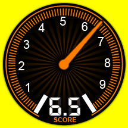
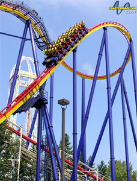

MANTIS
SPECS
Max Height: 145 ft.
Max Speed: 60 mph
Inversions: 4
Duration: 2 min. 40 sec.
Manufacturer: Bolliger & Mabillard
REIVEW
I’m sure a lot of people like Mantis, but I was not a fan one bit for 2 reasons. The first was that they stick a brake on the first drop. That is the worst feeling to be picking up speed on the drop and all of sudden be restrained by a brake. The second reason is the 2nd half of this ride features the worst head rattling I’ve ever experienced. So if you're in the mood for a subpar stand up roller coaster, make sure to pack the asprin.